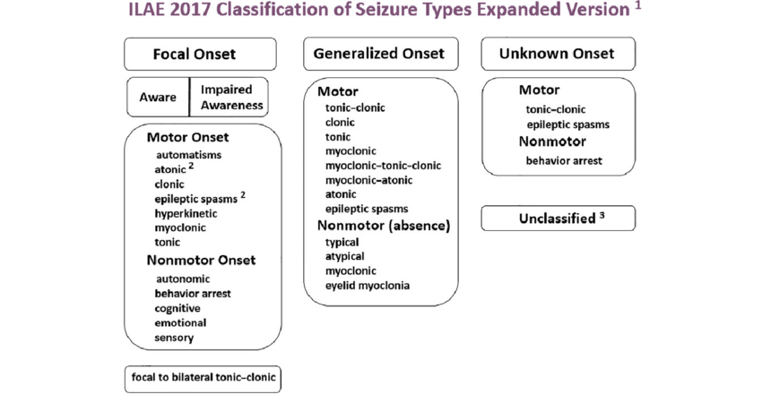

What You Will Learn
After reading this note, you should be able to...
- This content is not available yet.
Read More üç™
- A seizure is a paroxysmal, time-limited change in behavior that results from abnormal electrical activity in the brain, which can manifest as motor, sensory, autonomic, or psychic disorders.
- Convulsion is a motor manifestation of a seizure.
- It is a paroxysmal, time-limited change in motor activity.
- Seizures are common in the pediatric age group and occur in approximately 10% of children.
- Less than one-third of seizures in children are caused by epilepsy, a condition in which seizures are triggered recurrently from within the brain.
- Epilepsy is when two or more unprovoked seizures occur at an interval greater than 24 hours apart.
- In the United States, the cumulative lifetime incidence of epilepsy is 3%, and more than half of the cases begin in childhood.
- However, the annual prevalence is lower (0.5-0.8%) because many children outgrow epilepsy.
- In Nigeria, data needs to be articulated!!!
- This should include an assessment of the adequacy of the airway, ventilation, and cardiac function as well as measurement of temperature, blood pressure, and glucose concentration.
- The physician should search for potentially life-threatening causes of seizures such as meningitis, systemic sepsis, accidental and non-accidental head trauma, and ingestion of drugs of abuse and other toxins.
- History should also attempt to define factors that may have promoted the convulsion and provide a detailed description of the seizure and the child's postictal state.
- Most parents vividly recall their child's initial convulsion and can describe it in detail.
- The evaluator must determine whether the seizure has a focal onset or is generalized.
- Focal seizures may be characterized by motor or sensory symptoms and include forceful turning of the head and eyes to one side, unilateral clonic movements beginning in the face or extremities, or a sensory disturbance such as paresthesias or pain localized to a specific area.
- Motor seizures may be focal or generalized and can be tonic-clonic, tonic, clonic, myoclonic, or atonic.
- Tonic seizures are characterized by increased tone or rigidity.
- Atonic seizures are characterized by flaccidity or lack of movement during a convulsion.
- Clonic seizures consist of rhythmic muscle contraction and relaxation.
- Myoclonus is most accurately described as shock-like contraction of a muscle.
- The duration of the seizure and state of consciousness should be documented.
- The history should determine whether an aura preceded the convulsion and the behavior of the child immediately preceding the seizure.
- Common auras experienced by children include epigastric discomfort, pain, and a feeling of fear.
- The posture of the patient, presence and distribution of cyanosis, vocalizations, loss of sphincter control (particularly of the urinary bladder), and postictal state (including sleep and headache) should be noted.
- Examination of a child with a seizure disorder should be geared toward the search for an organic cause.
- The child's head circumference, length, and weight should be charted.
- A careful general and neurologic examination should be performed.
- The eyegrounds must be examined for the presence of papilledema, retinal hemorrhages, chorioretinitis, coloboma, and macular changes, as well as retinal phakoma.
- The finding of unusual facial features or associated physical findings such as hepatosplenomegaly may point to an underlying metabolic or storage disease as the cause of the neurologic disorder.
- Ashleaf macules of tuberous sclerosis seen with an ultraviolet light source, presence of adenoma sebaceum, shagreen patch, multiple café-au-lait spots, and the presence of retinal phakoma could all indicate a neurocutaneous disorder as the cause of the seizure.
- Localizing neurologic signs such as a subtle hemiparesis with hyperreflexia, downward-drifting extended arm with eyes closed might suggest a contralateral hemispheric structural lesion (e.g., a slow-growing temporal lobe glioma) as the cause.
- Unilateral growth arrest of the thumbnail, hand, or extremity in a child with a focal seizure disorder suggests a chronic condition such as a porencephalic cyst, arteriovenous malformation, or cortical atrophy in the opposite hemisphere.
Introduction
- Febrile convulsions are convulsions with fever in a child between the age of 6 months - 5 years in the absence of intracranial or other defined causes.
- It is the commonest type of convulsion in childhood worldwide.
- Generally, it has an excellent prognosis.
- Interventions, however, may make the outcome worse than the disease process itself.
- The peak age for the occurrence of febrile convulsions has been quoted by several authors from temperate regions to be between 13 – 23 months; however, in the tropics, the peak age was found to be an average of 30 months.
- Factors for recurrence of febrile convulsions include:
- Young age – when the first seizure occurs within the first year of life.
- Family history of febrile convulsions.
- Short duration of fever before the first convulsion.
- Family history of afebrile convulsion.
- Febrile convulsion gene is linked to chromosome 19p and 8q.
- Convulsion(s) can be the first manifestation.
- The rapidity of the fever has been claimed to be responsible for the convulsions in susceptible children.
- The commonest cause in this environment is malaria.
- In the developed world, the commonest cause is viral infections.
Ilorin Experience
- Malaria was responsible for over 80% of cases of febrile convulsions, either singly or in combination with other morbidities.
- It also represented about 10% of total admissions into the children’s emergency room.
- It was found to be more common in males.
- The mean age was found to be 29.9 ± 15.1 months.
- The application of water on children with febrile convulsions was used by the majority of the caregivers.
- Twenty-six percent of the children had complex febrile convulsions.
- Other causes include pneumonia, otitis media, pharyngitis, osteomyelitis, and other non-intracranial infections.
- The peak age of onset is approximately 14-18 months, and the incidence approaches 3-4% of young children.
- A strong family history of febrile convulsions in siblings and parents suggests a genetic predisposition.
- Linkage studies in several large families have mapped the febrile seizure gene to chromosomes 19p and 8q.
- An autosomal dominant inheritance pattern is demonstrated in some families.
Classification/Clinical Manifestations
- Classified as simple or complex (atypical).
- Simple when:
- Generalised tonic-clonic
- Lasts for less than 15 minutes
- Single episode in a day
- No postictal loss of consciousness
- Normal EEG 7 days postictal
- Complex when: Focal, lasts longer than 15 minutes, multiple episodes per day, postictal loss of consciousness, abnormal EEG 7 days postictal (CUC).
- Manifestation depends on the cause:
- Cough
- Diarrhoea
- Vomiting
- Malaise
- Limitation of movement
- Throat pain
- Earache
- Dysuria
- Etc.
Investigations
- Note: Some investigations are based on the doctor's discretion, depending on the child's symptomatology.
- CSF analysis (microbiology and biochemistry) to rule out meningitis (often a must!).
- Random blood glucose
- Full blood count (FBC) + malaria parasite (MP)
- Urine microscopy, culture, and sensitivity (MCS)
- Chest X-ray
- Throat swab for MCS
- Ear swab
Treatment
- Routine treatment of a normal infant with simple febrile convulsions includes a careful search for the cause of the fever and its treatment.
- Active measures to control the fever, including the use of antipyretics, and reassurance of the parents.
- Prolonged anticonvulsant prophylaxis for preventing recurrent febrile convulsions is controversial.
If Needed
- Oral diazepam is an effective and safe method of reducing the risk of recurrence of febrile seizures.
- At the onset of each febrile illness, oral diazepam, 0.3 mg/kg every 8 hours (1 mg/kg/24 hr), is administered for the duration of the illness (usually 2-3 days).
- The side effects are usually minor, but symptoms of lethargy, irritability, and ataxia may be reduced by adjusting the dose.
- This strategy may be useful when parental anxiety associated with febrile seizures is severe.
- Two unprovoked seizures greater than 24 hours apart suggest the presence of an epileptic disorder within the brain that will lead to future recurrences.
- Careful evaluation to:
- Look for the cause of the seizures.
- Assess the need for treatment with antiepileptic drugs.
- Estimate the potential for response to treatment and remission of seizures in the future.
- Children who have a propensity to develop epilepsy may experience the first convulsion in association with a viral illness or a low-grade fever.
- Seizures that occur during the early morning hours or with drowsiness, particularly during the initial phase of sleep, are common in childhood epilepsy.
- Irritability, mood swings, headache, and subtle personality changes may precede a seizure by several days.
- Some parents can accurately predict the timing of the next seizure based on changes in the child's disposition.
- Some parents can describe or demonstrate the seizure excellently.
- The frequency, time of day, precipitating factors, and alternation in the type of convulsive disorder are important.
- The description of the seizure along with the family history can provide clues to the presence of possible genetic epileptic syndromes.
- The physical, ophthalmologic, and neurologic examination can provide information about:
- The presence of increased intracranial pressure.
- Neurocutaneous syndromes.
- Structural brain abnormalities including malformations, injuries, infections, or tumors.
Investigations
- EEG is useful for determining the type of epilepsy and the future prognosis.
- Neuroimaging with MRI
- Lumbar puncture should be considered for children with repeated seizures and other evidence of neurodevelopmental disability.
- Metabolic testing (e.g., administration of pyridoxine for suspected pyridoxine-responsive seizures, serum lactate and pyruvate, and urine organic acids) is not recommended routinely but should be dictated by clinical circumstances.
- Measurement of serum electrolytes including calcium and magnesium is not recommended as a routine practice.
- The precise mechanisms of seizures are unknown.
- Generation of a significant burst discharge and a GABAergic inhibitory system are common pathways.
- Excitatory amino acid neurotransmitters (glutamate, aspartate) produce neuronal excitation by acting on specific cell receptors.
- Seizures may arise from areas of neuronal death, and these regions may promote the development of novel hyperexcitable synapses that can cause further seizures.
- Further, convulsions may be produced in experimental animals by the phenomenon of kindling, in which repeated subconvulsive stimulations of the brain result in generalized seizure.
- Immaturity of the child’s brain.
- Genetic predisposition.
International Classification of Epileptic Sezures
- Partial Seizures
- Simple partial (consciousness retained)
- Motor
- Sensory
- Autonomic
- Psychic
- Complex partial (consciousness impaired)
- Simple partial, followed by impaired consciousness
- Consciousness impaired from onset
- Partial seizures with secondary generalization
- Simple partial (consciousness retained)
- Generalized Seizures
- Generalized tonic-clonic
- Absences (typical/atypical)
- Tonic
- Clonic
- Atonic
- Myoclonic
- Infantile spasms
- Unclassified Seizures

ILAE 2017 Classification of Seizure
×

ILAE 2017 Classification of Seizure
Why Classify?
- The seizure type may provide a clue to the cause of the seizure disorder.
- Delineation of the seizure may allow a firm basis for making a prognosis and choosing the most appropriate treatment.
- Anticonvulsants may readily control generalized tonic-clonic epilepsy in a child, but a patient with multiple seizure types or partial seizures may fare less well with the same type of therapy.
- Infants with benign myoclonic epilepsy have a more favorable outlook than patients with infantile spasms.
- A school-aged child who has benign partial epilepsy with centrotemporal spikes (rolandic epilepsy) has an excellent prognosis and is unlikely to require a prolonged course of anticonvulsants.
Clinical Classification
- Clinical classification of seizures may be difficult because the manifestations of different seizure types may be similar.
- For example, the clinical features of a child with absence seizures may be almost identical to those of another patient with complex partial epilepsy.
- EEG is a useful adjunct to the classification of epilepsy because of the variability of seizure expressivity in this age group.
- A classification combining the clinical description of the seizure with the EEG findings has improved the delineation of childhood epilepsy.
Syndromic Classification
- Epilepsy in children has also been classified by syndrome using:
- EEG findings including the background rhythm
- Neurologic examination
- Age at onset of seizures
- Cognitive development
- Type of seizure {mnemonic (ENACT)}
- With this, approximately 50% of childhood seizures have been classified into specific syndromes.
- The syndromic classification of seizures provides a distinct advantage over previous classifications by:
- Improving management with appropriate anticonvulsant medication
- Identifying potential candidates for epilepsy surgery
- Providing patients and families with a reliable and accurate prognosis
- Examples of epilepsy syndromes include:
- Infantile spasms (West syndrome)
- Benign myoclonic epilepsy of infancy
- The Lennox-Gastaut syndrome
- Febrile convulsions
- Landau-Kleffner syndrome
- Benign childhood epilepsy with centrotemporal spikes (rolandic epilepsy)
- Rasmussen encephalitis
- Juvenile myoclonic epilepsy (Janz syndrome)
- Lafora disease (progressive myoclonic epilepsy)
- Partial seizures may be classified as simple or complex:
- Simple Seizures: Consciousness is maintained.
- Complex Seizures: Consciousness is impaired.
Simple Partial Seizures (SPS)
- Muscle movements are characterized by asynchronous clonic or tonic movements, involving the face, neck, and extremities.
- Versive seizures consisting of head turning and conjugate eye movements are particularly common.
- Some patients experience an aura (e.g., chest discomfort, headache), which may be the only manifestation of a seizure.
- Children often describe the aura as "feeling funny" or "something crawling inside me."
- The average seizure duration is 10-20 seconds.
- Patients remain conscious and may verbalize during the seizure.
- No postictal phenomenon follows the event.
- EEG may show spikes or sharp waves unilaterally, bilaterally, or a multifocal spike pattern.
Complex Partial Seizures (CPS)
- A CPS may begin with a simple partial seizure with or without an aura, followed by impaired consciousness.
- The onset of the CPS may coincide with an altered state of consciousness.
- The presence of an aura always indicates a focal onset of the seizure.
- Periods of altered consciousness may be brief and infrequent; only an experienced observer or EEG may identify the abnormal event.
- Automatisms are common features.
Automatism in an Infant
- Automatisms are a common feature of CPS in infants and children, occurring in approximately 50-75% of cases; the older the child, the higher the frequency of automatisms.
- They develop after the loss of consciousness and may persist into the postictal phase, but are not recalled by the child.
- Automatic behavior in infants is characterized by alimentary automatisms, including:
- Lip smacking
- Chewing
- Swallowing
- Excessive salivation
- These movements can represent normal infant behavior and are difficult to distinguish from the automatisms of CPS.
- Prolonged and repetitive alimentary automatisms associated with a blank stare or lack of responsiveness almost always indicate CPS in an infant.
Automatism in an Older Child
- Automatic behavior in older children consists of semi-purposeful, incoordinated, and unplanned gestural automatisms, including:
- Picking and pulling at clothing or bed sheets
- Rubbing or caressing objects
- Walking or running in a nondirective, repetitive, and often fearful fashion
Complex Partial Seizures (CPS)
- Spreading of the epileptiform discharge during CPS can result in secondary generalization with a tonic-clonic convulsion.
- During the spread of the ictal discharge throughout the hemisphere, the following may be noted:
- Contralateral versive turning of the head
- Dystonic posturing
- Tonic or clonic movements of the extremities and face, including eye blinking
- The average duration of a CPS is 1-2 minutes, which is considerably longer than an SPS or an absence seizure.
- CPSs are associated with interictal EEG findings, including anterior temporal lobe sharp waves or focal spikes, and multifocal spikes are a frequent finding.
- Techniques to increase identification of spikes and sharp waves include:
- Sleep-deprived EEG
- Zygomatic leads during EEG
- Prolonged EEG recording
- Video EEG study of the hospitalized patient weaned from anticonvulsants
- Radiographic studies, especially MRI, are most likely to identify abnormalities in the temporal lobe of a child with CPS, such as:
- Mesial temporal sclerosis
- Hamartoma
- Postencephalitic gliosis
- Subarachnoid cysts
- Infarction
- Arteriovenous malformations
- Slow-growing glioma
Benign Partial Epilepsy with Centrotemporal Spikes (BPEC)
- A common type of partial epilepsy in childhood with an excellent prognosis.
- Characterized by:
- Clinical features and EEG findings (Rolandic foci)
- Lack of a neuropathologic lesion
- BPEC occurs between the ages of 2 and 14 years, with a peak age of onset at 9-10 years.
- The disorder occurs in normal children with an unremarkable history and normal neurologic examination.
- Positive family history of epilepsy is common.
- Seizures are usually partial, with motor signs and somatosensory symptoms often confined to the face.
- Oropharyngeal symptoms include:
- Tonic contractions and paresthesias of the tongue
- Unilateral numbness of the cheek (particularly along the gum)
- Guttural noises, dysphagia, and excessive salivation
- Unilateral tonic-clonic contractures of the lower face frequently accompany the oropharyngeal symptoms, along with clonic movements or paresthesias of the ipsilateral extremities.
- Consciousness may be intact or impaired, and the partial seizure may proceed to secondary generalization.
- BPEC occurs during sleep in 75% of patients, whereas CPS tends to be observed during waking hours.
- The EEG pattern is diagnostic for BPEC, characterized by a repetitive spike focus localized in the centrotemporal or Rolandic area with normal background activity.
- Carbamazepine is the preferred drug, continued for at least 2 years or until 14-16 years of age, when spontaneous remission usually occurs.
Rasmussen Encephalitis
- This subacute inflammatory encephalitis is one cause of epilepsia partialis continua.
- A nonspecific febrile illness may precede the onset of focal seizures, which can be frequent or continuous.
- The onset is usually before age 10 years.
- Sequelae include:
- Hemiplegia
- Hemianopia
- Aphasia
- The EEG reveals diffuse paroxysmal activity with a slow background.
- The disease is progressive and potentially lethal, but it more often becomes self-limited with significant neurologic deficits.
- The disease may be due to autoantibodies that bind to and stimulate glutamate receptors.
- Studies have identified cytomegalovirus in several surgical specimens of patients with Rasmussen encephalitis.
Generalized Tonic Clonic
- Very common and may follow a partial seizure with a focal onset (secondary generalization) or occur de novo.
- They may be associated with an aura, suggesting a focal origin of the epileptiform discharge.
- It is important to inquire about the presence of an aura, as it may indicate the area of pathology.
- Patients suddenly lose consciousness and may emit a shrill, piercing cry.
- Their eyes roll back, their entire body musculature undergoes tonic contractions, and they rapidly become cyanotic (apnoea).
- The clonic phase is characterized by rhythmic clonic contractions alternating with relaxation of all muscle groups.
- The clonic phase slows towards the end of the seizure, which usually lasts for a few minutes, ending abruptly as the patient sighs.
- During the seizure, children may bite their tongue but rarely vomit.
- Loss of sphincter control, particularly of the bladder, is common during a generalized tonic-clonic seizure.
- Tight clothing and jewelry around the neck should be loosened, the patient should be placed on one side, and the neck and jaw should be gently hyperextended to enhance breathing.
- The mouth should not be opened forcibly by an object or by a finger to avoid injury or aspiration.
- Postictally, children are initially semicomatose and typically remain in a deep sleep for 30 minutes to 2 hours.
- Examination during or immediately after the seizure may reveal:
- Truncal ataxia
- Hyperactive deep tendon reflexes
- Clonus
- Positive Babinski reflex
- The postictal phase is often associated with vomiting and an intense bifrontal headache.
Absence Seizures
- Can be simple (typical) or complex (atypical).
- Simple (typical) absence (petit mal) seizures are characterized by a sudden cessation of motor activity or speech, with a blank facial expression and flickering of the eyelids.
- Uncommon before age 5 years, more prevalent in girls, never associated with an aura, rarely persist longer than 30 seconds, and not associated with a postictal state.
- Children with absence seizures may experience countless seizures daily.
- Patients do not lose body tone, but their head may fall forward slightly.
- Immediately after the seizure, patients resume preseizure activity with no indication of postictal impairment.
- Automatic behavior frequently accompanies simple absence seizures.
- Hyperventilation for 3-4 minutes routinely produces an absence seizure.
- The EEG shows a typical 3/sec spike and generalized wave discharge.
- Complex (atypical) absence seizures have associated motor components consisting of myoclonic movement of the face, fingers, or extremities and, on occasion, loss of body tone.
- These seizures produce atypical EEG spike and wave discharges at 2-2.5/sec.
Myoclonic Epilepsies of Childhood
- This disorder is characterized by repetitive seizures consisting of brief, often symmetric muscular contractions with loss of body tone, causing falling or slumping forward, which tends to cause injuries to the face and mouth.
- Myoclonic epilepsies include a heterogeneous group of conditions with multiple causes and variable outcomes.
- At least five distinct subgroupings can be identified, representing the broad spectrum of myoclonic epilepsies in children.
- Benign Myoclonus of Infancy
- Typical Myoclonic Epilepsy of Early Childhood
- Complex Myoclonic Epilepsies
- Juvenile Myoclonic Epilepsy (Janz Syndrome)
- Progressive Myoclonic Epilepsies
mnemonic (B T C J P)
Benign Myoclonus of Infancy
- Begins during infancy and consists of clusters of myoclonic movements confined to the neck, trunk, and extremities.
- The myoclonic activity may be confused with infantile spasms; however, the EEG is normal in patients with benign myoclonus.
- The prognosis is good, with normal development and the cessation of myoclonus by 2 years of age.
- An anticonvulsant is not indicated.
Typical Myoclonic Epilepsy of Early Childhood
- Children are near normal before the onset of seizures, with an unremarkable pregnancy, labor, and delivery and intact development.
- Mean age of onset is approximately 2 years, but ranges from 6 months to 4 years.
- The frequency varies; they may occur several times daily, or children may be seizure-free for weeks.
- Some patients have febrile convulsions or generalized tonic-clonic afebrile seizures that precede the onset of myoclonic epilepsy.
- Approximately half of patients occasionally have tonic-clonic seizures in addition to the myoclonic epilepsy.
- The EEG shows fast spike wave complexes of 2.5 Hz or greater and a normal background rhythm in most cases.
- At least one third of the children have a positive family history of epilepsy, which suggests a genetic etiology in some cases.
- The long-term outcome is relatively favorable.
- Mental retardation develops in the minority, and more than 50% are seizure-free several years later.
- Learning and language problems and emotional and behavioral disorders occur in a significant number of these children and require prolonged follow-up by a multidisciplinary team.
Complex Myoclonic Epilepsies
- These consist of a heterogeneous group of disorders with a uniformly poor prognosis.
- Focal or generalized tonic-clonic seizures beginning during the 1st year of life typically antedate the onset of myoclonic epilepsy.
- The generalized seizure is often associated with an upper respiratory tract infection and a low-grade fever and frequently develops into status epilepticus.
- Approximately one third of these patients have evidence of delayed developmental milestones.
- A history of hypoxic-ischemic encephalopathy in the perinatal period and the finding of generalized upper motor neuron and extrapyramidal signs with microcephaly constitute a common pattern among these children.
- A family history of epilepsy is much less prominent in this group compared with typical myoclonic epilepsy.
- Some children display a combination of frequent myoclonic and tonic seizures, and when interictal slow spike waves are evident in the EEG, the seizure disorder is classified as the Lennox-Gastaut syndrome.
- This syndrome is characterized by the triad of intractable seizures of various types, a slow spike wave EEG during the awake state, and mental retardation.
- Patients with complex myoclonic epilepsy routinely have interictal slow spike waves and are refractory to anticonvulsants.
- The seizures are persistent, and the frequency of mental retardation and behavioral problems is approximately 75% of all patients.
- Treatment with valproic acid or benzodiazepines may decrease the frequency or intensity of the seizures.
- The ketogenic diet should be considered for patients whose seizures are refractory to anticonvulsants.
Juvenile Myoclonic Epilepsy (Janz Syndrome)
- Usually begins between the ages of 12 and 16 yr and accounts for approximately 5% of the epilepsies.
- A gene locus has been identified on chromosome 6p21.
- Patients note frequent myoclonic jerks on awakening, making hair combing and tooth brushing difficult.
- As the myoclonus tends to abate later in the morning, most patients do not seek medical advice at this stage, and some deny the episodes.
- A few years later, early morning generalized tonic-clonic seizures develop in association with the myoclonus.
- The EEG shows a 4-6/sec irregular spike and wave pattern, which is enhanced by photic stimulation.
- The neurologic examination is normal, and the majority respond dramatically to valproate, which is required lifelong.
- Discontinuance of the drug causes a high rate of recurrence of seizures.
Progressive Myoclonic Epilepsies
- This heterogeneous group of rare genetic disorders uniformly has a grave prognosis.
- These conditions include:
- Lafora disease
- Myoclonic epilepsy with ragged-red fibers (MERRF)
- Sialidosis type 1
- Ceroid lipofuscinosis
- Juvenile neuropathic Gaucher disease
- Juvenile neuroaxonal dystrophy
Progressive Myoclonic Epilepsies
- Lafora disease presents in children between 10 and 18 yr with generalized tonic-clonic seizures.
- Ultimately, myoclonic jerks appear; these become more apparent and constant with progression of the disease.
- Mental deterioration is a characteristic feature and becomes evident within 1 yr of the onset of seizures.
- Neurologic abnormalities, particularly cerebellar and extrapyramidal signs, are prominent findings.
Progressive Myoclonic Epilepsies
- The EEG shows polyspike-wave discharges, particularly in the occipital region, with progressive slowing and a disorganized background.
- The myoclonic jerks are difficult to control, but a combination of valproic acid and a benzodiazepine (e.g., clonazepam) is effective in controlling the generalized seizures.
- Lafora disease is an autosomal recessive disorder, and the diagnosis may be established by examination of a skin biopsy specimen for characteristic periodic acid-Schiff positive inclusions, which are most prominent in the eccrine sweat gland duct cells.
- The gene for Lafora disease is located on 6p24 and it encodes a protein, tyrosine phosphatase.
Infantile Spasms
Introuduction
- This usually begins between the ages of 4 and 8 months.
- Characterized by brief symmetric contractions of the neck, trunk, and extremities.
- There are at least three types of infantile spasms: flexor, extensor, and mixed.
- Clusters or volleys of seizures may persist for minutes, with brief intervals between each spasm.
Types of Infantile Spasms
- Flexor spasms occur in clusters or volleys and consist of sudden flexion of the neck, arms, and legs onto the trunk.
- Extensor spasms produce extension of the trunk and extremities and are the least common form of infantile spasm.
- Mixed infantile spasms consist of flexion in some volleys and extension in others and is the most common type of infantile spasm.
- A cry may precede or follow an infantile spasm.
- The spasms occur during sleep or arousal but have a tendency to develop while patients are drowsy or immediately on awakening.
- The EEG most commonly associated with this is referred to as hypsarrhythmia, which consists of a chaotic pattern of high-voltage, bilaterally asynchronous, slow-wave activity, or a modified hypsarrhythmia pattern.
Classification of Infantile Spasms
- Classified into two groups: cryptogenic and symptomatic.
- Cryptogenic: Child has an uneventful pregnancy and birth history as well as normal developmental milestones before the onset of seizures.
- The neurologic examination and the CT and MRI scans of the head are normal, and there are no associated risk factors.
- Approximately 10-20% of infantile spasms are classified as cryptogenic.
- Symptomatic: Related directly to several prenatal, perinatal, and postnatal factors.
- Prenatal and perinatal factors include HIE, PVL, congenital infections, inborn errors of metabolism, neurocutaneous syndromes, cytoarchitectural abnormalities (e.g., lissencephaly, schizencephaly), and prematurity.
- Postnatal conditions include CNS infections, head trauma (especially subdural hematoma and IVH), and HIE.
- Crytpogenic infantile spasms have a good prognosis, whereas the symptomatic type have an 80-90% risk of mental retardation.
- The underlying CNS disorder has a major role in the neurologic outcome.
Pathogenesis of Infantile Spasms
- These include:
- dysfunction of the monoaminergic neurotransmitter system in the brainstem,
- derangement of neuronal structures in the brainstem,
- and an abnormality of the immune system.
- One hypothesis implicates corticotropin-releasing hormone (CRH), a putative neurotransmitter, metabolized in the inferior olive.
- CRH acts on the pituitary to enhance the release of adrenocorticotropic hormone (ACTH); ACTH and glucocorticoids suppress the metabolism and secretion of CRH by a feedback mechanism.
- It is proposed that specified stresses or injury to an infant during a critical period of neurodevelopment causes CRH overproduction, resulting in neuronal hyperexcitability and seizures.
- The number of CRH receptors reaches a maximum in an infant's brain followed by spontaneous reduction with age, perhaps accounting for the eventual resolution of infantile spasms, even without therapy.
- Exogenous ACTH and glucocorticoids suppress CRH synthesis, which may account for their effectiveness in treating infantile spasms.
- Previously known as Childhood Epilepsy with Occipital Paroxysms (early onset type).
- Onset in early childhood in most cases, usually 3-6 years.
- The defining clinical feature is that the seizures are autonomic in nature, typically consisting of nausea, vomiting, and retching.
- As the seizure evolves, the child may develop a gradual loss of awareness and become unresponsive, and eye and head deviation may occur.
- The seizure is often very prolonged (autonomic status epilepticus). Rarely, hemiconvulsions are seen.
- Headache may also develop (and lead to consideration of migraine).
- Neurodevelopment is normal, and the seizures are usually very infrequent and resolve spontaneously within a few years.
- The EEG has a normal background, with multi-focal, high-amplitude spike or sharp and slow waves, involving all regions on repeated EEGs, but most commonly seen over the posterior head regions.
- A particular feature is that when visual fixation is lost (eyes closed, or in the dark) the spikes stop, referred to as “fixation-off sensitivity”.
- The ictal discharge consists usually of unilateral rhythmic slowing with spikes.
- This condition is presumed to be genetic.
- This is a rare condition of unknown cause.
- It is more common in boys and has a mean onset of 5 1/2 years.
- LKS is characterized by loss of language skills in a previously normal child.
- At least 70% have an associated seizure disorder.
- Aphasia may be primarily receptive or expressive, and auditory agnosia may be so severe that the child is oblivious to everyday sounds.
- Hearing is normal, but behavioral problems, including irritability and poor attention span, are common.
- Formal testing often shows normal performance and visual-spatial skills despite poor language.
- The seizures are of several types, including focal or generalized tonic-clonic, atypical absence, partial complex, and occasionally myoclonic.
- High-amplitude spike and wave discharges predominate and tend to be bitemporal, but they can be multifocal or generalized.
- In the evolutionary stages of the condition, the EEG findings may be normal.
- The spike discharges are always more apparent during non-rapid eye movement (REM) sleep; thus, a child suspected of LKS should have an EEG during sleep, particularly if the awake record is normal.
- Valproic acid is the anticonvulsant of choice; however, some children require a combination of valproic acid and clobazam to control their seizures.
- If the seizures and aphasia persist, a trial of steroids should be considered.
Mechanisms of Action of Anticonvulsants
- Blockade of Voltage-Gated Sodium Channels
- Blockade of voltage-gated sodium channels is the most common mechanism of action among currently available AEDs.
- The established agents phenytoin and carbamazepine are archetypal sodium channel blockers, a mechanism they share with the newer drugs, including lamotrigine, felbamate, topiramate, oxcarbazepine, zonisamide, rufinamide, lacosamide, and eslicarbazepine acetate.
- There is also anecdotal evidence to suggest that sodium valproate and gabapentin have inhibitory effects on neuronal sodium channels.
- Antiepileptic agents with sodium channel blocking properties have the highest affinity for the channel protein in the inactivated state.
- Blockade of Voltage-Gated Calcium Channels
- Voltage-gated calcium channels represent another important target for several antiepileptic agents.
- The efficacy of ethosuximide and zonisamide in generalized absence epilepsy is believed to be mediated by blockade of the LVA T-type calcium channel in the soma and dendrites of thalamic relay and reticular neurons.
- There is anecdotal evidence that sodium valproate may have a similar action.
- GABA Receptor Modulation
- Activation of the ionotropic GABA receptor, resulting in an enhanced response to synaptically released GABA, is a major AED mechanism.
- Barbiturates (e.g., phenobarbitone, primidone) and benzodiazepines (e.g., diazepam, clobazam, clonazepam) share this effect but bind to distinct sites on the receptor complex and differentially influence the opening of the chloride ion pore.
- GABA Turnover (Increment)
- Vigabatrin and tiagabine are modern antiepileptic agents that exert their actions by selective neurochemical effects at the inhibitory synapse, resulting in altered GABA turnover. This leads to either reduced metabolism of GABA or prevention of its transportation from the synaptic cleft.
- Blockade of Glutamate Receptors
- This is believed to contribute to the pharmacological profile of felbamate and topiramate.
- Phenobarbitone has also been reported to affect the receptors, albeit at concentrations towards the upper end of its clinical range.
- Lamotrigine can selectively reduce glutamate release. However, this phenomenon is more likely related to an inhibitory action on pre-synaptic sodium and calcium channels rather than any direct effect on the glutamate system.
Other Mechanisms
- Carbonic Anhydrase Inhibition
- Acetazolamide is a classical carbonic anhydrase inhibitor that has been employed as an antiepileptic agent with some success.
- Topiramate and zonisamide also share this mechanism but are significantly less potent and have greater selectivity for some patients.
- Thus, carbonic anhydrase inhibition can be considered as an AED mechanism of action, but the extent to which it contributes to the clinical activity of individual compounds remains to be determined.
- Interaction with Synaptic Vesicle Protein 2A
- An unclear interaction between synaptic vesicle protein 2A and levetiracetam is still being investigated.
- Currently, there is no clear indication of how this interaction works, even at the cellular level.
- Initial Assessment
- The first step in managing epilepsy is to confirm that the patient has a seizure disorder.
- A negative result on a neurologic examination and EEG usually supports the approach of watchful waiting rather than immediate administration of an anticonvulsant.
- Choosing an Anticonvulsant
- The choice of anticonvulsant depends on the classification of the seizure, which is determined by the patient's history and EEG findings.
- Drug Selection and Management
- The goal is to use only one drug with the fewest possible side effects to control seizures.
- The drug dosage is increased slowly until seizure control is achieved or the maximum dose is reached.
- It is crucial to be familiar with the pharmacokinetics and toxic actions of the anticonvulsant and to monitor the patient regularly for seizure control and side effects.
- Duration of Treatment
- If complete seizure control is achieved, a minimum of 2 seizure-free years is generally considered an adequate and safe duration of treatment for a patient with no risk factors.
- Prominent risk factors that may influence the duration of treatment include age greater than 12 years at onset, neurologic dysfunction (e.g., motor handicap or mental retardation), a history of prior neonatal seizures, and numerous seizures before achieving control.
- When the decision is made to discontinue the drug, the weaning process should occur over 3-6 months because abrupt withdrawal may cause status epilepticus.
- Polypharmacology (the possession of multiple mechanisms of action) is more common among modern antiepileptic agents than their traditional counterparts.
- One exception is sodium valproate, which is assumed to have multiple mechanisms of action. This is based on the fact that extensive laboratory investigations have failed to find a single mechanism that would explain its broad spectrum of clinical activity.
Note
Benzodiazepines
- The drugs diazepam and lorazepam IV are used for initial management of status epilepticus.
- Rectal diazepam gel has been demonstrated to be an effective and safe treatment to abort episodes of acute repetitive seizures in children.
- Clonazepam is useful for the management of the Lennox-Gastaut syndrome, myoclonic, akinetic, and absence seizures.
- The elimination half-life of clonazepam is 18-50 hr.
- Clonazepam may increase serum phenytoin concentrations when used together, and additional CNS depression may occur when combined with other CNS depressant drugs.
- Nitrazepam is useful for the management of myoclonic seizures.
- The elimination half-life of nitrazepam is 18-57 hr.
- The drug may increase CNS depression when used with additional depressants.
- Clobazam is indicated as adjunctive therapy for complex partial seizures. The half-life is 10-30 hr.
- Clobazam may increase the serum drug levels of carbamazepine, phenytoin, phenobarbital, and valproic acid when used concomitantly.
Carbamazepine
- Effective for the management of generalized tonic-clonic and partial seizures.
- Carbamazepine acts similarly to phenytoin by decreasing the sustained repetitive firing of neurons by blocking sodium-dependent channels and by decreasing depolarization-dependent calcium uptake.
- Significant leukopenia (<1,000 neutrophils/mL³) and hepatotoxicity may rarely develop, particularly during the initial 3-4 months of therapy.
- Therefore, a full blood count (FBC) with differential and AST and ALT levels should be obtained on a monthly basis during this period, although serious idiosyncratic drug reactions may develop despite normal liver function tests and routine blood work.
- Subsequent laboratory testing is determined by the presence of adverse symptoms or signs.
- Erythromycin should be used cautiously with carbamazepine because the two drugs compete for metabolism by the liver.
- The plasma concentration of carbamazepine is lowered by phenytoin, phenobarbital, and valproic acid.
- Hyponatremia has also been reported as a side effect.
- The half-life is 8-20 hr, and it should be given two or three times daily.
Ethosuximide
- Exerts its anticonvulsant action by blocking calcium channels associated with thalamocortical circuitry.
- Ethosuximide is an effective drug for the management of typical absence epilepsy and has a half-life of 60 hr.
- When used with phenobarbital or primidone, ethosuximide may reduce the serum levels of those anticonvulsants.
Phenobarbital and Primidone
- They are relatively safe anticonvulsants that are particularly useful for generalized tonic-clonic seizures.
- However, approximately 25% of children undergo severe behavioral changes on these drugs.
- Neurologically abnormal children are at greater risk.
- Valproic acid interferes with the metabolism of phenobarbital, causing elevated phenobarbital plasma levels and toxicity despite the usual daily doses.
- The plasma half-life of phenobarbital is 48-150 hr.
- The plasma half-life of primidone is 10-21 hr.
- Phenobarbital is prescribed twice daily, and primidone is prescribed three times a day.
- Routine blood tests are not indicated for these anticonvulsants.
Phenytoin
- Phenytoin acts by decreasing the sustained repetitive firing of single neurons by blocking sodium-dependent channels and decreasing depolarization-dependent calcium uptake.
- Phenytoin is used for primary and secondary generalized tonic-clonic seizures, partial seizures, and status epilepticus.
- The plasma half-life is 7-42 hr.
Valproic Acid
- Valproic acid is a broad-spectrum anticonvulsant.
- It acts by blocking voltage-dependent sodium channels and increases calcium-dependent potassium conductance.
- The elimination half-life is 6-16 hr.
- Useful for the management of many seizure types, including generalized tonic-clonic, absence, atypical absence, and myoclonic seizures.
- It rarely induces behavioral changes but is associated with mild gastrointestinal disturbances, alopecia, tremor, and hyperphagia.
- Two rare but serious side effects of valproate are a Reye-like syndrome and irreversible hepatotoxicity.
- Coma with elevated serum ammonia and decreased levels of serum carnitine have also been documented with it.
Vigabatrin
- Acts by binding to the degradative enzyme GABA transaminase receptor, causing an increase in GABA levels and inhibition of neurotransmission.
- The drug is effective in the management of infantile spasms, particularly in children with tuberous sclerosis.
- Vigabatrin is also useful as adjunctive therapy for poorly controlled seizures.
- The plasma half-life is 5-8 hr.
- It may cause a reduction in plasma phenobarbital and phenytoin levels.
- Visual field constrictions have also been reported.
ACTH
- This is the preferred drug for the management of infantile spasms.
- Prednisone is equally effective.
- A common schedule includes ACTH, 20 U/day IM for 2 wk, and if no response occurs, the dosage is increased to 30 and then 40 U/day IM for an additional 4 wk.
- Unless seizure control is complete, ACTH is replaced with oral prednisone, 2 mg/kg/24 hr for 2 wk.
- If the seizures persist, prednisone is given for an additional 4 wk.
- The side effects of ACTH include hyperglycemia, hypertension, electrolyte abnormalities, gastrointestinal disturbances, infection, and transient brain shrinkage observed by CT scanning.
- ACTH and prednisone are equally effective for the treatment of cryptogenic and symptomatic seizures, and control can be expected in approximately 70% of patients.
- There is no relationship between the ease or degree of seizure control and ultimate neurologic and cognitive outcome.
- The response to medication is usually apparent within a few weeks of therapy, but one third of patients who respond suffer relapse when the ACTH or prednisone is discontinued.
Ketogenic Diet
- This treatment is for the management of recalcitrant seizures, especially children with complex myoclonic epilepsy with associated tonic-clonic convulsions.
- Also the primary therapy for infants with pyruvate dehydrogenase deficiency and glucose transporter protein deficiency.
- It is safe and effective for infants with epilepsy who are younger than 2 yr of age.
- The diet restricts the quantity of carbohydrate and protein, and most calories are provided as fat.
- Children older than 2-3 yr will not tolerate this fatty, unpalatable diet.
- Because the diet demands precise weighing of foodstuffs and is time consuming to prepare, it is not accepted by all families.
- The mechanism of action of the ketogenic diet is unknown; some evidence shows that it exerts an anticonvulsant effect secondary to elevated levels of β-hydroxybutyrate and acetoacetate resulting from ketosis.
- The use of valproic acid is contraindicated in association with the ketogenic diet, because the risk of hepatotoxicity is enhanced.
Newer Drugs
- Zonisamide - adjunct treatment for partial seizures, myoclonic seizures.
- Levetiracetam - adjunct treatment for partial seizures.
- Oxcarbazepine - adjunct treatment for partial seizures.
- Tiagabine - used for complex partial seizures.
- Topiramate - adjunctive therapy for refractory complex seizures with or without secondary generalization.
- Onset of anticonvulsant therapy to confirm that the drug level is within the therapeutic range.
- For noncompliant patients and families.
- At the time of status epilepticus.
- During accelerated growth spurts.
- For patients on polytherapy, especially valproic acid, phenobarbital, and lamotrigine due to drug interactions.
- For uncontrolled seizures or seizures that have changed in type.
- For symptoms and signs of drug toxicity (e.g., toxicity due to a metabolite of carbamazepine, carbamazepine-10,11 epoxide).
- For patients with hepatic or renal disease.
- For children with cognitive or physical disabilities, especially those taking phenytoin, in whom toxicity may be difficult to evaluate.
NB: Good clinical judgment is more reliable in achieving seizure control than over-reliance on therapeutic drug monitoring.
Worthy of Note!!!
- The most serious adverse anticonvulsant drug reactions develop during the initial 2-3 months of therapy; LFT in the first 2-3 months is recommended. Subsequently, routine blood tests are ordered only when clinically indicated.
- Anticonvulsants introduced during childhood may be required during adolescence and the childbearing years.
- Some anticonvulsants, including phenytoin, valproic acid, carbamazepine, and primidone, are associated with specific birth defects, including facial and limb anomalies and spinal dysraphism.
Statements of Facts!!!
- The plasma concentration of carbamazepine is lowered by phenytoin, phenobarbital, and valproic acid.
- The use of valproic acid is contraindicated in association with the ketogenic diet because the risk of hepatotoxicity is enhanced.
Practice Questions
Check how well you grasp the concepts by answering the following questions...
- This content is not available yet.
Read More üç™
Contributors
Jane Smith
She is not a real contributor.
John Doe
He is not a real contributor.
Send your comments, corrections, explanations/clarifications and requests/suggestions